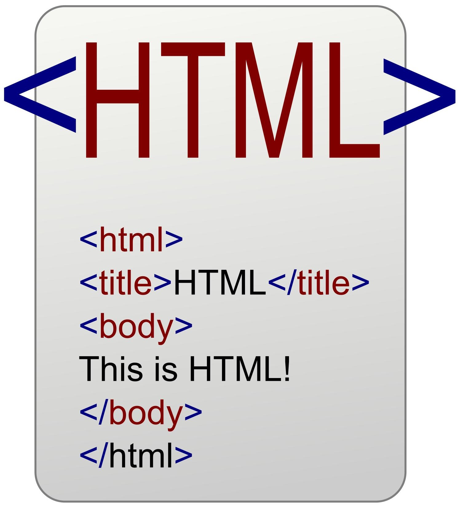
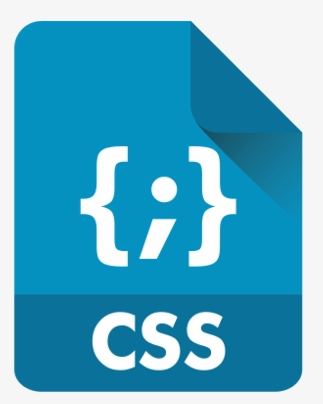

HTML/CSS/JavaScript

HTML (Hyper Text Markup Language - Հիպերտեքստերի նշագրման լեզու)
LEARN NOW

CSS-ը (Cascading Style Sheets - կասկադային ոճերի թերթներ) օգտագործվում է վեբ-էջեր նախագծողների կողմից գույներ, տառատեսակներ, գտնվելու վայր և այլ նկարագրություններ տալու համար։ CSS-ի հիմնական նպատակն է առանձնացնել HTML էջի պարունակությունը և նրա նկարագրությունը:
LEARN NOW